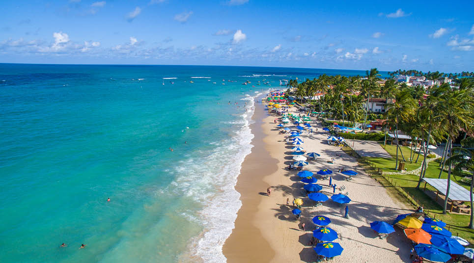
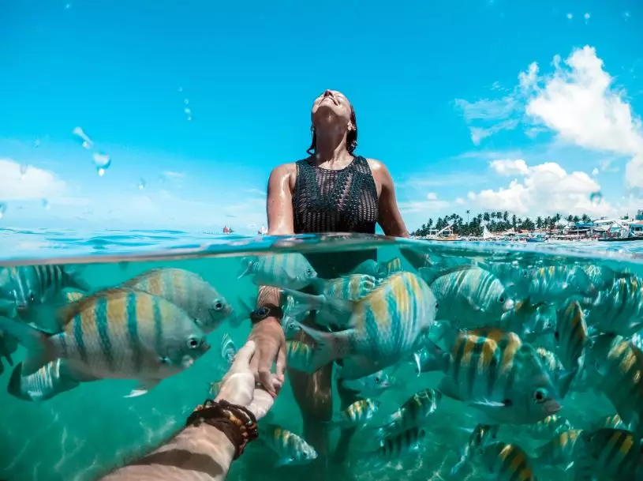

Porto de Galinhas, é um distrito localizado na cidade de Ipojuca, em Pernambuco, a cerca de 60 km de Recife. A
vila é um dos melhores destinos de praia não apenas do Nordeste, mas do Brasil. Não é preciso dizer muito para
explicar o lugar: suas praias, caracterizadas pelas águas verdes e pelas entre piscinas naturais, saltam aos olhos
e arrancam elogios dos mais descrentes. O distrito e tem a facilidade de estar próximo do Aeroporto Internacional
do Recife, fato que facilita muito chegada a Porto de Galinhas. Suas águas mornas e agradáveis em todo o ano
convidam para um mergulho e têm potencial para conquistar pessoas de todas as idades.

Porto de Galinhas, é um dos hits da região e ponto de partida dos jangadeiros, que levam até as piscinas
naturais onde os peixinhos estão. Nas piscinas a beleza da natureza fala alto e faz entender por que Porto é
esse sucesso todo. Na Praia de Muro Alto, outro local importante para incluir no roteiro, é a calmaria que
impressiona. A praia parece uma lagoa e quem mergulha em suas águas corre sério risco de não querer voltar para
casa. Porto tem praias diferentes, com elementos distintos, porém uma beleza singular.

O sucesso da vila teve início por causa de suas piscinas naturais, que ficam na área central da vila, com acesso
através de um passeio de jangada que você não deve deixar de fazer. O lugar é realmente lindo, cheio de peixes e
com água cristalina. E a melhor praia de Porto de Galinhas, a Praia de Muro Alto, também não pode ficar de fora do
seu roteiro. No período de maré baixa essa praia fica calminha, como uma lagoa... é uma delícia!

a melhor época para ir a Porto de Galinhas é de setembro a março. Isso porque, são nestes meses em que chove menos
e que o sol brilha praticamente todos os dias. Para evitar superlotação na areia, preços mais altos com hospedagem
e filas nos restaurantes, evite viajar a Porto de Galinhas durante feriados.